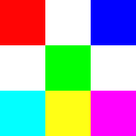

Leitura de Imagem e Webcam
1. Leitura de Imagens com OpenCV
import cv2
print ("OpenCV Version : %s " % cv2.__version__)
1.1 Leitura e Exibição de Imagens
A função cv2.imread na célula abaixo fará a leitura de um arquivo de imagem e armazenará em uma variável, grid.
Observe atentamente a imagem abaixo, que é a imagem original.
{kind=link}

Nota-se que temos uma grade de 9x9, onde a célula superior esquerda é da cor vermelha e a superior direita é da cor azul.
Agora vamos abrir a imagem com o OpenCV utilizando a função cv2.imread e armazenar em uma variável chamada grid.
grid = cv2.imread("img/img9x9_aumentada.png")
Vamos visualizar a imagem com a função cv2.imshow.
Quando mostramos uma imagem com o OpenCV, não podemos esquecer de chamar cv2.waitKey() para segurar a imagem, e cv2.destroyAllWindows() para fechar as janelas antes de sair da célula de código.
Aviso
-
A célula abaixo vai abrir uma janela com a imagem. Esta janela pode estar escondida atrás desta janela do navegador.
-
Se você fechar a janela, o programa vai travar. Para continuar a execução,
aperte qualquer tecla enquanto a janela estiver ativa. -
Se já fechou a janela, você pode reiniciar o kernel para continuar a execução.
cv2.imshow("Imagem BGR", grid)
cv2.waitKey()
cv2.destroyAllWindows()
Historicamente, a ordem dos sub-pixels das imagens usadas pelo OpenCV é invertida: em vez de RGB é BGR.
Podemos fazer a conversão de BGR para RGB com a função cv2.cvtColor.
grid_rgb = cv2.cvtColor(grid, cv2.COLOR_BGR2RGB)
cv2.imshow("Imagem BGR", grid_rgb)
cv2.waitKey()
cv2.destroyAllWindows()
Note que a célula superior esquerda agora é azul e a superior direita é vermelha. Isso acontece porque o OpenCV SEMPRE entende que a imagem está no formato BGR, e não RGB.
Então quando fizemos a operação cv2.cvtColor(grid, cv2.COLOR_BGR2RGB), não estamos OBJETIVAMENTE convertendo de BGR para RGB, mas apenas trocando a ordem dos canais de forma SUBJETIVA. Isso porque não existe um identificador para o formato RGB ou BGR, mas apenas uma convenção na hora de trabalhar com a imagem.
1.2 Imagens como matrizes
No OpenCV as imagens são matrizes do numpy. Vamos carrgar uma versão pequena da imagem anterior, com apenas 9 pixels.
mini_grid = cv2.imread("img/img9x9.png")
print(mini_grid.shape)
Obtemos: mini_grid.shape = (3,3,3).
Isso significa que a imagem é uma matriz com, respectivamente, 3 linhas, 3 colunas e 3 canais de cor.
mini_grid
Note que o tipo 'uint8' quer dizer unsigned int de 8 bits. Ou seja, é capaz de representar entre \(0\) e \(2^{8}-1=255\)
Esta informação é importante quando manipularmos os bits da imagem. É preciso ter certeza de que não vai ocorrer overflow - atribuir valores que o tipo não suporte
1.3 Transposta de uma matriz
Precisamos especificar na transposta a ordem em que esperamos que as dimensões da imagem original apareçam. O padrão da OpenCV para a ordem das dimensões é 0=linhas, 1=colunas e 2=componentes de cor. O que queremos é uma transposta de linhas e colunas, portanto deve ficar como abaixo:
trans = grid.transpose((1,0,2))
cv2.imshow("Transposta", trans)
cv2.imshow("Original", grid)
cv2.waitKey()
cv2.destroyAllWindows()
Note que a imagem acima teve linhas e colunas transpostas.
Agora, vamos estudar uma imagem de uma arara, primeiramente vamos ler a imagem e exibi-la.
{kind=link}
arara = cv2.imread("img/arara.jpg")
O atributo shape traz as dimensões da matriz.
Antes de executar o comando, observe os eixos da imagem abaixo.
Pergunta: A imagem tem mais linhas ou mais colunas?
Pergunta: Quantos canais de cor tem a imagem?
cv2.imshow("Arara", arara)
cv2.waitKey()
cv2.destroyAllWindows()
Podemos ver que a imagem tem 3 canais de cor, o que é esperado para uma imagem colorida. A imagem é mais larga do que alta, portanto tem mais colunas do que linhas.
Como podemos ver pelo shape, da imagem.
arara.shape
Vamos transpor também a imagem da arara
arara_transposta = arara.transpose((1,0,2))
arara.shape
arara_transposta.shape
cv2.imshow("Transposta", arara_transposta)
cv2.imshow("Original", arara)
cv2.waitKey()
cv2.destroyAllWindows()
1.4 Separando os canais da imagem
Uma imagem é simplesmente uma matriz de pixels. Uma imagem colorida são três matrizes de pixels, "empilhadas" uma sobre a outra.
O OpenCV permite gerenciar os canais de cor usando cv2.split(), para separar os canais, e cv2.merge() para juntar os canais.
arara_b, arara_g, arara_r = cv2.split(arara)
print('arara.shape', arara.shape)
print('arara_b.shape', arara_b.shape)
print('arara_g.shape', arara_g.shape)
print('arara_r.shape', arara_r.shape)
Como as imagens são matrizes do numpy, podemos acessar os canais diretamente usando os índices.
Por exemplo, para acessar o canal vermelho, usamos img[:,:,2]. O : significa "todos os elementos da dimensão". Ou seja, estamos acessando todos os elementos das dimensões 0 e 1, e o elemento 2 da dimensão 2.
print('arara_b.shape', arara[:,:,0].shape)
print('arara_g.shape', arara[:,:,1].shape)
print('arara_r.shape', arara[:,:,2].shape)
Visualizando os canais separadamente, podemos ver que o canal vermelho é o que tem mais informação, e o canal azul é o que tem menos informação.
cv2.imshow("Canal Vermelho", arara_r)
cv2.imshow("Canal Verde", arara_g)
cv2.imshow("Canal Azul", arara_b)
cv2.imshow("Original", arara)
cv2.waitKey()
cv2.destroyAllWindows()
Podemos também voltar à imagem original combinando os canais
arara_rgb_original = cv2.merge([arara_r, arara_g, arara_b])
cv2.imshow("Original", arara_rgb_original)
cv2.waitKey()
cv2.destroyAllWindows()
2. Usando webcam
No curso, vamos trabalhar com sequências de imagens, que podem ser obtidas de câmeras ou de arquivos de vídeo.
Por exemplo, podemos usar a webcam do computador para capturar imagens e processá-las.
Para isso, usamos a função cv2.VideoCapture(0), que abre o dispositivo de vídeo de índice 0 (normalmente a webcam).
webcam = cv2.VideoCapture(0) # Tente vários IDs para descobrir qual é em sua webcam
import time as t
t.sleep(5) # Espera a webcam ficar pronta
A função cap.read() retorna um par de valores, sendo o primeiro o uma flag indicando se a leitura foi bem sucedida e o segundo a imagem lida.
val, image = webcam.read()
print(f'val = {val}')
print(f'image.shape = {image.shape}')
webcam.release() # fecha a webcam
cv2.imshow("webcam", image)
cv2.waitKey()
cv2.destroyAllWindows()
Podemos também usar a janela do OpenCV para mostrar um video.
Note que para isso, na função cv2.waitKey() é preciso passar um valor de tempo em milissegundos. Por exemplo, cv2.waitKey(1) vai esperar 1 milissegundo.
Para fechar a janela, é preciso apertar a tecla ESC.
webcam = cv2.VideoCapture(0)
cv2.namedWindow("cam")
while True:
val, image = webcam.read()
if val:
cv2.imshow("cam", image)
if cv2.waitKey(1) == 27: # Aguarda 1 ms pela tecla 'ESC'
break
cv2.destroyAllWindows()
webcam.release()
Prática 4.1
Crie um arquivo chamado first_image.py que contenha uma classe chamada ProcessImage com as seguintes especificações:
- A classe
ProcessImagedeve possuir um método chamadoload_imageque recebe o caminho de uma imagem e salva a imagem carregada em uma variável da classe chamadaself.bgr. - A classe
ProcessImagedeve possuir um método chamadoshow_imageque exibe a imagem carregada. - A classe
ProcessImagedeve possuir um método chamadoshow_channelsque exibe os três canais de cor (B, G e R) da imagem em três janelas separadas usando o OpenCV.
O arquivo first_image.py deve ter uma função chamada main que:
- Cria um objeto da classe
ProcessImage. - Utiliza o método
load_imagepara carregar uma imagem, passando o caminho da imagem como parâmetro. - Chama o método
show_channelspara exibir os canais de cor da imagem carregada.
Prática 4.2
Crie um arquivo chamado webcam.py que contenha uma classe chamada ProcessImage com as seguintes especificações:
- A classe
ProcessImagedeve possuir um método chamadorun_imageque recebe uma imagem, salva a imagem em uma variável da classe chamadaself.bgr, inverte as cores da imagem (convertendo de BGR para RGB) e realiza a transposição da imagem. - A classe
ProcessImagedeve possuir um método chamadoshow_imageque exibe a imagem processada.
O arquivo webcam.py deve ter uma função chamada main que:
- Cria um loop infinito que captura imagens da webcam.
- Utiliza o método
run_imagepara processar a imagem capturada. - Chama o método
show_imagepara exibir a imagem processada.